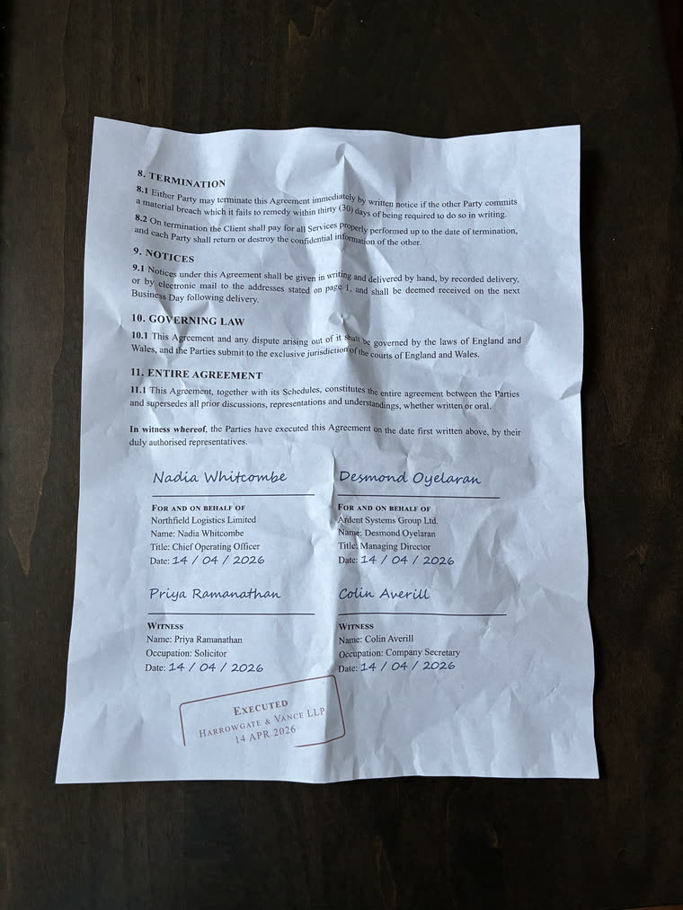
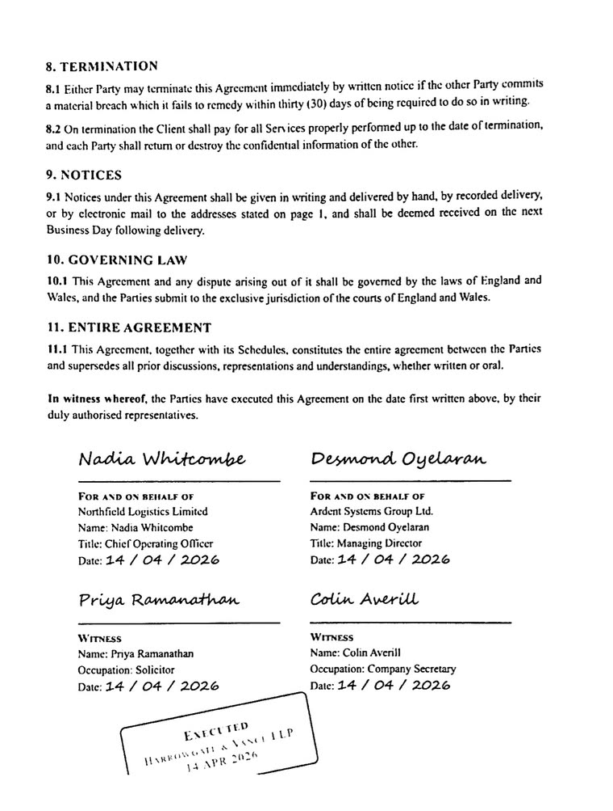
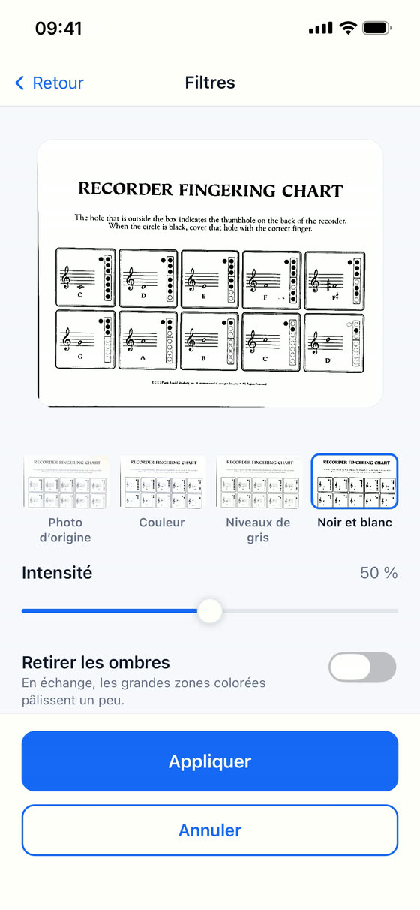
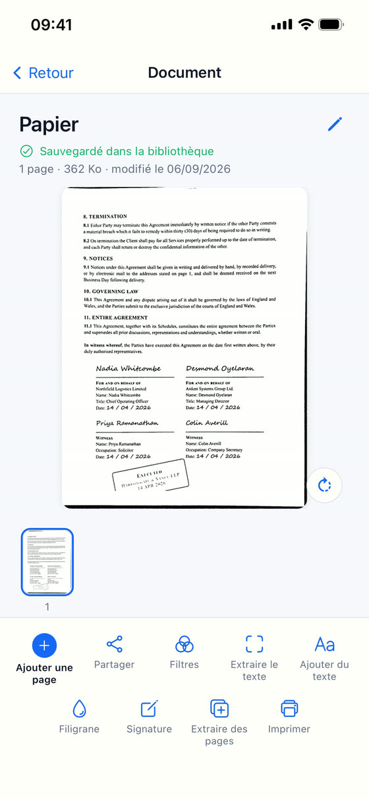

Le scanner de documents qui ne quitte pas votre iPhone.
Vous photographiez une feuille, l'application détecte ses bords, la redresse et rend le texte
net : vous obtenez un vrai scan, pas une photo de papier.

La photo

Le scan
La même page, entière des deux côtés : photographiée froissée sur une table, et telle que Scan Cam la rend.Télécharger sur l’App Store
Gratuit, sans compte. iPhone et iPad.
Et tout se passe sur votre téléphone. Aucun compte à créer, aucun envoi vers un serveur, aucune
publicité. Vos factures, vos contrats et vos papiers d'identité ne quittent jamais votre iPhone
— sauf le jour où vous décidez vous-même de les partager.
Scanner
Bords détectés et page redressée, même photographiée de travers
Quatre rendus : photo d'origine, couleur, niveaux de gris, noir et blanc
Intensité réglable au doigt, avec un aperçu qui suit
Retrait des ombres en une tape, pour les pages photographiées sous une lampe ou une main
Plusieurs pages dans un même document, à réordonner, pivoter ou retirer

Les quatre rendus, l intensité au doigt, et le retrait des ombres.
Ranger
Des dossiers et des sous-dossiers, comme sur un ordinateur
Une recherche qui trouve aussi ce qui est rangé au fond d'un dossier, et qui dit où
Renommer, déplacer, dupliquer, supprimer
Finir et partager
Exporter en PDF ou en JPEG
Ajouter du texte sur une page
Imprimer directement depuis l'application
Enregistrer dans l'app Fichiers, ou envoyer par la fenêtre de partage de l'iPhone

Un document ouvert, et tout ce qu on peut en faire.
Scan Cam Pro
La version gratuite est complète et sans limite de temps : scanner, ranger, filtrer, annoter,
imprimer et exporter en PDF autant que vous voulez. Les PDF gratuits portent une petite mention
« Numérisé avec Scan Cam » en bas de page.
L'abonnement Pro ajoute :
Le PDF sans aucune mention
La reconnaissance de texte, qui lit vos pages et vous rend le texte à copier
La signature, dessinée du doigt et posée où vous voulez
Le filigrane, en travers de la page
La fusion de plusieurs documents en un seul
L'extraction de pages vers un nouveau document
L'export en Word (.docx) et en Excel (.xlsx)
La reconnaissance de texte fonctionne sur le téléphone, sans internet : elle lit l'alphabet
latin, le japonais et le chinois.